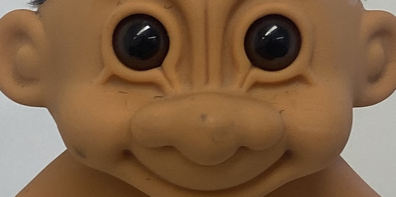

Unwillingly, O queen, did I thy hair// Part from thy head
A video installation exploring the relationship between seeing and watching.
Github repo for this is hereYoutube link to the installation at Southwark Park Gallery 8-9/2/2025 here
I was constantly playing with my rat-tail - I always knew that it was there and what it felt like even though I didn't know what it looked like. I only saw it when I accidentally yanked it off my head, and so losing it got me thinking about documentation and ways of seeing. When you see, you have to physically move your eyes around, and there’s constant autonomic dilations and reflexes involved in maintaining the images you see. You choose to see where and when, and for how long.
When you are shown images on a screen, it’s a passive and disembodied process. The eye as a human organ is taken out of the equation, and is reduced to a mechanistic bundle of photoreceptive cells.
Dziga Vertov (1923) writes ‘I’m an eye. A mechanical eye’, and even though the process of recording images with a camera is somewhat analogous to human seeing, the experience of watching images on a screen is phenomenologically distinct. The act of sight – of seeing vs. watching- becomes another way in which technologies - whether optic, communicative, or reproductive – mediate experiences and circumscribe our understanding and activation of the body.
The random selection of output images positions the total number of images that can be shown as a form of dataset. Ali Akbar Mehta argues that the process of working with datasets is the foundational element of new media, able to displace linear narrative perspectives. Furthermore, a 2016 Princeton University study found that respondents were up to 3 times more likely to perceive criminal intent when only shown slow-motion footage (in response to Commonwealth vs Jordan 2013). We have a tendency to read all moving images as though they were films, through a lens of narrative language. We lack sufficient frameworks to truly access moving image – we still don’t understand how we perceive the images being beamed directly into our brain at 24x a second. My works aims to highlight some of these inconsistences, and to differentiate between various optic modalities.
I wanted to investigate the differences between analog seeing and seeing-with-machines. The machine creates sequences of images that are not relatable to human sight, in a way that ends up confusing and disorientating. I aim to demonstrate that these two ways of seeing are fundamentally different, far more than we realise.
